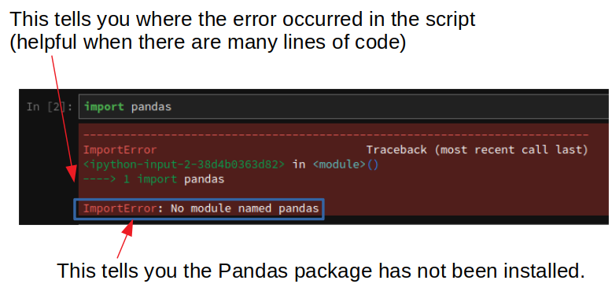
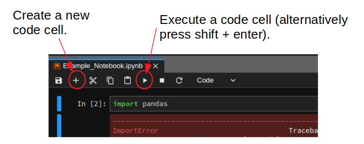
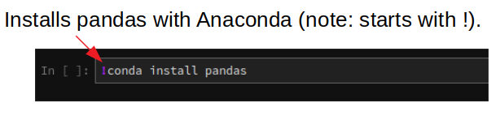

Vorwort#
Dieses Juypter-Book besteht aus einer Reihe interaktiver Jupyter-Notebooks zum Thema Wassermengenwirtschaft und Klimawandel. Es wurde ursprünglich von Dan Kovacek und Steven Weijs an der University of British Columbia erstellt und von Gregor Johnen ins Deutsche übersetzt und angepasst. Ziel der einzelnen Notebooks ist es, Studierenden die systematische Datenanalyse mithilfe der Open-Source-Software Python und Jupyter-Notebooks näherzubringen.
Es wird nicht erwartet, dass Teilnehmende über Vorkenntnisse der Programmierung verfügen. Der Schwerpunkt der Notebooks liegt auf hydrologischen Konzepten und nicht auf der Programmierung selbst, weshalb der erforderliche Code bereitgestellt wird. Jedes Notebook konzentriert sich auf eine bestimmte Komponente der hydrologischen Datenanalyse- und Auswertung. Anschließend sollten Fragen zu den zugrunde liegenden Konzepten beantwortet werden. Dies erfordert möglicherweise das Ändern von Variablen und das erneute Ausführen von Codeblöcken, um die Ergebnisse im Anschluss zu aktualisieren.
Anmerkung: Der Inhalt dieser Notebooks stellt keine vorgeschriebene bzw. normierte Kombination von Methoden für hydrologische Analysen dar. Vielmehr sollen einige grundlegende Konzepte vorgestellt werden und so zum Nachdenken über Modellunsicherheiten und Sensitivitäten anregen.
Erste Schritte mit interaktiven Python-Notebooks#
Die Jupyter-Notebooks in diesem Kurs können auf die folgenden Arten aufgerufen und ausgeführt werden:
Auf dem lokalen Rechner: Hier wird der Paket- und Umgebungsmanager Anaconda empfohlen. Die Programmierung in Python ist so vielseitig und leistungsstark, weil sie leistungsstarke Funktionen verwendet, die in anwendungsspezifischen Bibliotheken (bspw. pandas) geschrieben sind. Anaconda ist die Software, die sicherstellt, dass bei der Nutzung mehrerer solcher Pakete alles reibungslos läuft und keine Versionskonflikte entstehen. Im Fokus steht dabei ein simples Management von Paketen und Entwicklungsumgebungen. Denn dank dieses Tools muss nicht jedes Paket separat installiert werden, sondern bei der Installation werden Python und die wichtigsten Pakete automatisch mitinstalliert. Nach der Installation von Anaconda kann im Anschluss Jupyter Lab installiert werden.
In der Cloud#
Mit Binder: Die Notebooks können alternativ auch “in der Cloud” mit Binder ausgeführt werden. Über Binder kann mit dem Webbrowser auf die Notebooks zugegriffen werden, ohne Python oder Anaconda lokal zu installieren. Binder ist hier eine super Möglichkeit, Code mit anderen zu teilen und Projekte remote bei voller Funktionalität zu präsentieren. WICHTIG zu beachten ist, dass Dateien, auf die auf diese Weise zugegriffen wird, nicht in der Cloud-Instanz gespeichert werden können und dass alle vorgenommenen Änderungen lokal gespeichert oder neu geschrieben werden müssen, sobald die Instanz verlassen wird und später neu gestartet wird.
Mit Google Colab: Eine weitere Möglichkeit, die Notebooks auszuführen, ist die Nutzung von Google Colab. Colab ist eine kostenlose Cloud-basierte Plattform, die es ermöglicht, Jupyter-Notebooks direkt im Webbrowser auszuführen. Hierfür ist lediglich ein Google-Konto erforderlich. Der Vorteil von Colab liegt darin, dass keine lokale Installation von Python oder Jupyter notwendig ist und dass die Plattform Zugriff auf leistungsstarke Hardware wie GPUs bietet. Änderungen können gespeichert werden, indem das Notebook entweder lokal heruntergeladen oder in Google Drive gespeichert wird.
Anmerkung: Anaconda hat kürzlich eine sog. Paywall eingeführt. Dieses Abonemment ist aber grundsätzlich nicht notwendig, um die Software zu nutzen. Da die komplette Anaconda-Distribution mit allen Paketen lokal sehr viel Speicherplatz verbraucht, gibt es außerdem die Variante Miniconda, die nur Python, Conda sowie ein paar grundlegende Pakete enthält. Diese erfordert demnach auch eine manuelle Installation der in den Jupyter-Notebooks verwendeten Pakete. Dieser Installationsprozess ist jedoch nicht schwierig und kann wahlweise direkt im Notebook durchgeführt werden. D.h. die Installation von bspw. numpy und pandas wäre einfach eine Sache des Ausführens von
!conda install numpy pandasin einem Codeblock— Es reicht die Pakete einmal zu installieren, es sei denn, man installiert miniconda neu.
Einrichtung und Vorbereitung#
Eine detaillierte Anleitung zur Installation von Python über Anaconda findet man hier. Nach der Installation von Anaconda ist darauf zu achten, dass Python (Version 3.10 oder höher) korrekt installiert wurde. Überprüfen Sie dies, indem Sie in der Anaconda Prompt python --version eingeben. Stellen Sie ebenfalls sicher, dass Jupyter Notebook über den Anaconda Navigator oder die Anaconda Prompt (mit dem Befehl jupyter notebook) geöffnet und gestartet werden kann.
Für weitere Unterstützung wird im Moodle-Kurs ein Diskussionsforum zur Installation eingerichtet. Sollten nach Durchsicht der bereitgestellten Materialien Schwierigkeiten bei der Installation bestehen, können Fragen dort so detailliert wie möglich gestellt werden. Diese werden zeitnah beantwortet.
Lernressourcen#
Es gibt eine große Vielfalt an Programmiersprachen und Paketen innerhalb einer jeweiligen Programmiersprache. Am Anfang kann die Anzahl der neuen Konzepte beim lernen einer Programmiersprace schnell überwältigend sein und es passiert (fast jedem von uns), dass man sich dem nicht gewachsen fühlt:

(Quelle: Gfycat.com)
Das Internet ist zudem voll von hervorragenden Lernressourcen! Eine Investition in das Erlernen einiger grundlegender Konzepte ist die Zeit definitiv wert. Im Folgenden sind einige Ressourcen aufgelistet, die einem den Einstieg erleichtern:
Wie führt man Code in einem Notebook aus. Grundlagen der Python-Syntax und der Programmierung im Jupyter-Notebook.
Matplotlib ist eine beliebte Bibliothek zur Erstellung einer Vielzahl von Diagrammen.
Einführung in Python. Ein Einführungskurs, der anhand eines interaktiven Python-Notizbuchs in Jupyter unterrichtet wird.
Eine umfassende Liste interessanter, nützlicher und leistungsfähiger Jupyter-Notebook-Beispiele findet man hier.#
Weitere Informationen#
Paket-Installation#
Wenn beim Ausführen einer Code-Zelle in Jupyter die folgende Fehlermeldung zurückgegeben wird:

Dies bedeutet im Allgemeinen, dass ein Paket nicht installiert wurde. In diesem Fall handelt es sich um das Paket Pandas, das durch Erstellen einer neuen Zelle installiert werden kann:

Es kann folgendes eingegeben werden (Hier kann pandas durch den jeweiligen Namen des Pakets ersetzt werden, das installiert werden soll)

Die Zelle kann nun ausgeführt werden (Umschalttaste + Eingabetaste) (empfohlen), oder durch drücken der Schaltfläche “Ausführen”.
Lizenz#
Die Notizbücher, aus denen dieses Jupyter-Buch besteht, stehen unter der Lizenz [Creative Commons Attribution 4.0 International] (https://creativecommons.org/licenses/by/4.0/legalcode).